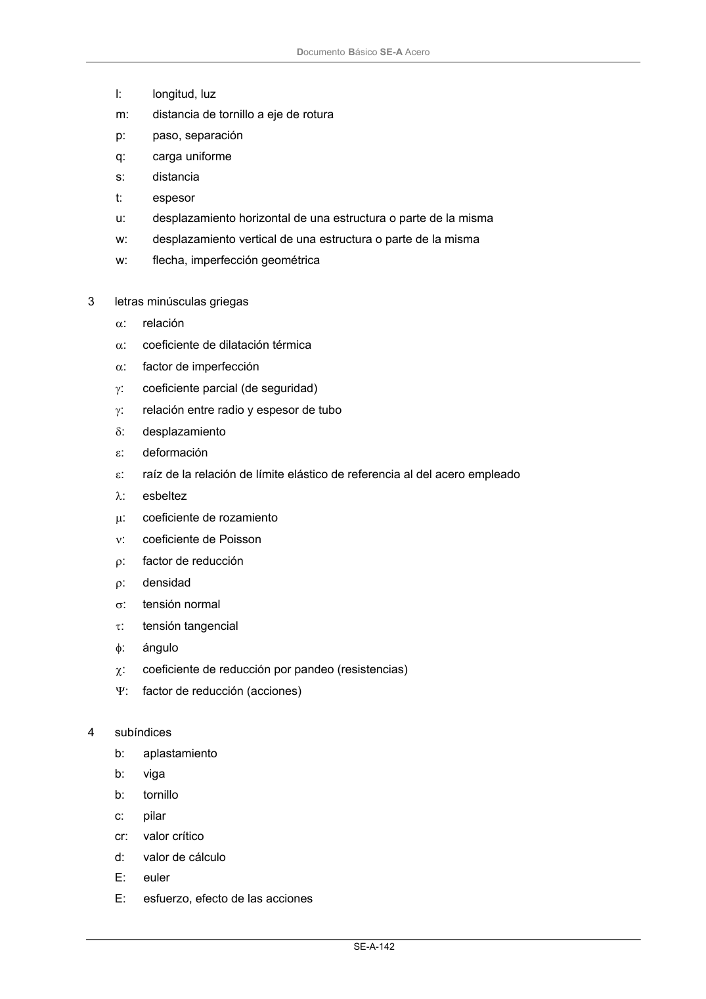

DB-SE-A Acero · edición 2007-10-23 · capa oficial
Documento DB-SE-A-oficial · SHA-256 del PDF 9ed9ea694aabfbda3bfbbef40dfe9223fde05d13c35bc2ba9751e5a96a22a64f
Página física 144 de 168.
Copia fiel del PDF fuente · Fuente oficial
Ficha de la disposición en la fuente oficial
Formato: Texto de la página (Markdown)
Documento Básico SE-A Acero SE-A-142 l: longitud, luz m: distancia de tornillo a eje de rotura p: paso, separación q: carga uniforme s: distancia t: espesor u: desplazamiento horizontal de una estructura o parte de la misma w: desplazamiento vertical de una estructura o parte de la misma w: flecha, imperfección geométrica 3 letras minúsculas griegas α: relación α: coeficiente de dilatación térmica α: factor de imperfección γ: coeficiente parcial (de seguridad) γ: relación entre radio y espesor de tubo δ: desplazamiento ε: deformación ε: raíz de la relación de límite elástico de referencia al del acero empleado λ: esbeltez µ: coeficiente de rozamiento ν: coeficiente de Poisson ρ: factor de reducción ρ: densidad σ: tensión normal τ: tensión tangencial φ: ángulo χ: coeficiente de reducción por pandeo (resistencias) Ψ: factor de reducción (acciones) 4 subíndices b: aplastamiento b: viga b: tornillo c: pilar cr: valor crítico d: valor de cálculo E: euler E: esfuerzo, efecto de las acciones
